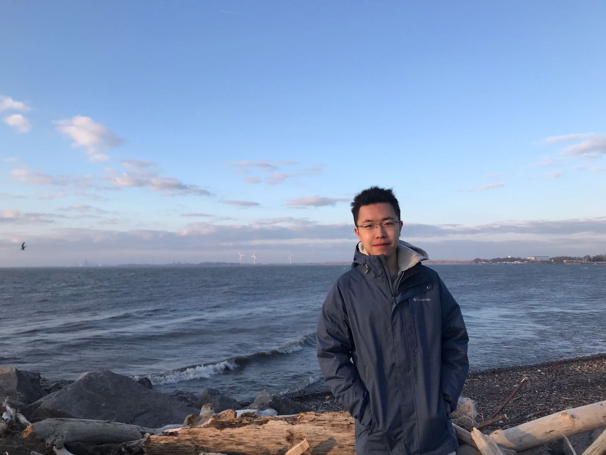
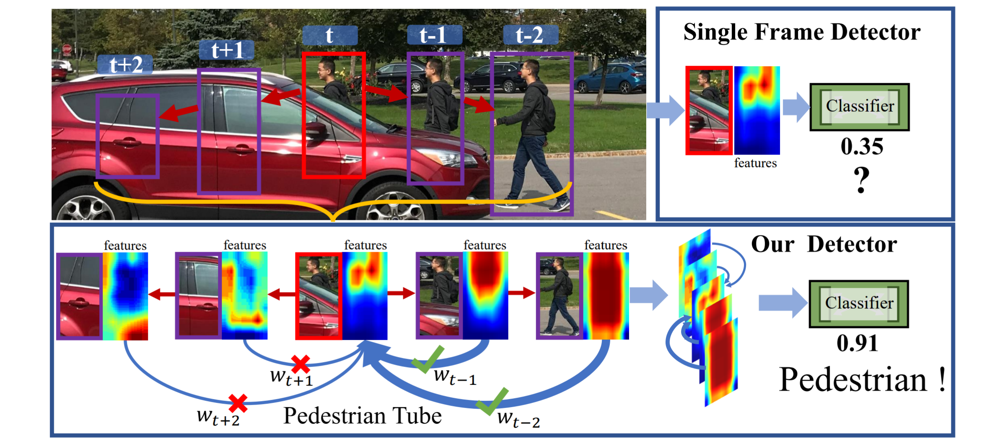
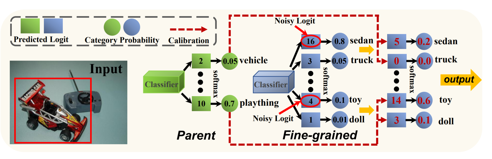
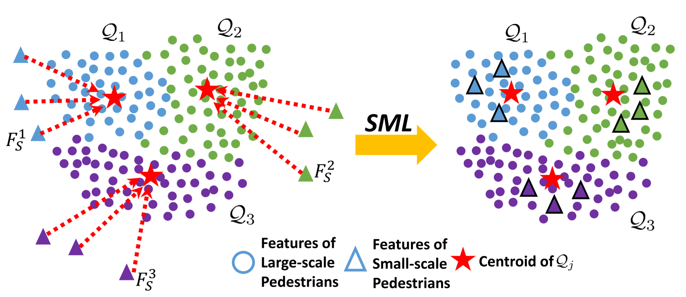

Jialian Wu (吴嘉濂)(pronunciation: jar-liam wu)Ph.D. Candidate at State University of New York at BuffaloEmail: jialianw at buffalo dot edu |
 |
I am a first-year Ph.D. student at State Univeristy of New York at Buffalo (UB), advised by Prof. Junsong Yuan. Before that, I spent one year on the M.S. study at Tianjin University during 2018-2019 and left for UB in July 2019 before finishing my degree. I received B.Eng. degree from Tianjin University in 2018. My current research interest is object recognition including detection, segmentatoin, and tracking.
Publication
- 
- 
- 
Research Experiences
-
Research Intern, Applied AI Lab, Horizon Robotics, San Francisco Bay Area.
May-August, 2020. Mentor: Yu Wang.
-
Research Intern, Horizon Robotics, Beijing.
May-August, 2018. Mentor: Qian Zhang.
Professional Activities
-
Conference Reviews
CVPR 2020, WACV 2021, ACCV 2020
-
Journal Reviews
IEEE Transactions on Image Processing

© Jialian Wu | Last updated: Aug. 2020